Several
coordinates transformations can be link together. The number is
defined with
n
b_transfo
in the previous namelist variables.
The following scheme gives an overview of the successive
transformations, starting from the dynamical coordinates ()
to the Cartesian coordinates of the atoms in the frame F1,
( ).
).
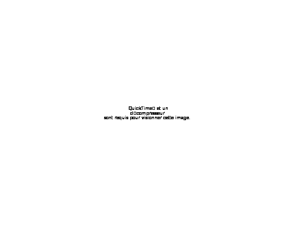
Scheme VII.2-1: Overview of the coordinate transformations.
In
the input file, the transformations have to be given in the reverse
order (from
 to
).
Therefore, the first transformation has to give the values of the
Cartesian coordinates in a frame (F1).
This frame is parallel to the Body-fixed frame (BF). The
transformation form F1
to BF is done automatically.
to
).
Therefore, the first transformation has to give the values of the
Cartesian coordinates in a frame (F1).
This frame is parallel to the Body-fixed frame (BF). The
transformation form F1
to BF is done automatically.
The last transformation enables to define the "active, inactive" coordinates. It is not really a transformation, but it defines the coordinates used in the dynamics.
Then, several other transformations can be added between the first and the last one, and each transformation is used in Tnum with an input set () and an output set () of coordinates (see Scheme VII.2-2)

Scheme VII.2-2: Scheme of the input set and output set.
The transformation is selected through the namelist "Coord_transfo" with some parameters:
name_transfo : name of the transformation
nat or Nat: number of atoms (for zmat and …) with dummy atoms.
nb_vect : number of vectors (for bunch).
nb_transfo : number of transformations (for oneD, hyperspherical …).
cos_th: if T (.TRUE.), it uses the cosine of the valence angle instead of the valence angle (for zmat). The default is .FALSE. (F).
The following table gives the list of all available transformations:
|
Name of the transformation |
Brief description |
Data of the input file |
Remarks |
|
zmat |
Define the usual z-matrix transformation like in most of the quantum chemistry codes.
Dummy atoms (without mass) can be used. You can mix spherical coordinates and Cartesian ones. |
nat MUST be defined if and only if it is the first transformation.
cos_th is optional (default: F).
Then, nat lines are read. |
Input, : 3Nat-6 primitive coordinates, . Output,
:
3Nat
Cartesian coordinates of the atoms,
Can be the first read transformation or the second one after the "bunch" one.
|
|
bunch |
Defines
the Cartesian coordinates of the atoms,
The relation
between
|
nb_vect MUST be defined.
Then, nb_vect lines are read. |
Input, : 3nb_vect Cartesian coordinates of vectors, . Output,
:
3Nat
Cartesian coordinates of the atoms,
Nat = 2nb_vect+1
Can be the first read transformation. After this transformation, the zmat or poly transformation MUST follow. |
|
QTOX_ana |
Trigger an analytical transformation. |
nat MUST be defined.
Then, nothing is read. |
Input, : 3Nat-6 primitive coordinates, . Output,
:
3Nat
Cartesian coordinates of atoms,
Not yet implemented in the "New transformation" |
|
poly |
Defines the curvilinear coordinates of the vectors as polyspherical coordinates.
The definition of subsystems or sub(sub)nsystems is possible.
|
nb_vect namelists "vectors" are read. |
Input, : 3Nat-6 primitive coordinates, . Output, : 3nb_vect Cartesian coordinates of vectors, .
In the input, it follows the transformation "bunch". |
|
Name of the transformation |
Brief description |
Data of the input file |
Remarks |
|
linear |
The coordinates, , are defined as linear combinations of : |
A matrix, , is read (dimension=3Nat-6). |
Input, : 3Nat-6 coordinates. Output, : 3Nat-6 coordinates.
Be careful of the order: the unsymmetrized coordinates are defined as function of the symmetrized ones.
|
|
linear_inv |
The coordinates, , are defined as linear combinations of : |
A matrix, 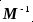, is read (dimension=3Nat-6). |
Input, : 3Nat-6 coordinates. Output, : 3Nat-6 coordinates.
|
|
identity |
Equality between and . |
Nothing is read. |
Input, : 3Nat-6 coordinates. Output, : 3Nat-6 coordinates.
Checking purpose |
|
NM |
Define curvilinear normal modes. |
Nothing is read.
The Hessian matrix has to be set up. |
Input, : 3Nat-6 coordinates. Output, : 3Nat-6 coordinates.
It is a particular case of the linear transformation.
Not yet implemented in the "New transformation" |
|
hyperspherical |
|
|
Input, : 3Nat-6 coordinates. Output, : 3Nat-6 coordinates.
Not yet implemented in the "New transformation" |
|
order |
Change the order of the coordinates. The ith integer in the list gives the position of 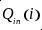 in : 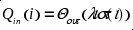 Qout( list(i) ) = Qin( i ) |
It reads a list of 3Nat-6 integers. |
Input, : 3Nat-6 coordinates. Output, : 3Nat-6 coordinates.
|
|
oneD |
Perform 1D-coordinates transformation. |
nb_transfo namelist "oneD" are read. |
Input, : 3Nat-6 coordinates. Output, : 3Nat-6 coordinates.
|
|
flexible |
Define the coordinates, , such there are function of active coordinates, : 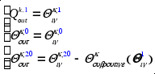 |
3Nat-6 integers are read:
20: flexible coord. 0: unchanged coord. 1: active coord.
A subroutine is required, 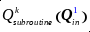 |
Input, : 3Nat-6 coordinates. Output, : 3Nat-6 coordinates.
Be careful, possible conflict with flexible coordinates defined in the active transformation.
Need a subroutine: calc_dnQflex |
|
Name of the transformation |
Brief description |
Data of the input file |
Remarks |
|
active |
Define the active, inactive (rigid, flexible) coordinates |
3Nat-6 integers are read:
20: flexible coord. 0: rigid (frozen) coord. 1: active coord. |
Input: No input coordinates
Output, : 3Nat-6 coordinates.
Be careful, possible conflict with flexible coordinates defined in the flexible transformation. |
This coordinate transformation can be the first one or the second (after the "bunch" transformation, see scheme VII.2-1). The coordinates are defined like in many quantum ab initio programs.
Remarks:
The input set of coordinates is the 3Nat-6
primitive coordinates,
and the output set of coordinates is the 3Nat
Cartesian coordinates of the atoms,
 .
.
The primitive coordinates are given in the following order: R2, R3, 3, R4, 4, 4, … , Rn, n, n.
The Cartesian coordinates are obtained in the atomic order: A1, A2, A3,… An.
The parameters of the namelist "Coord_transfo" relevant to this transformation are:
name_transfo="zmat": trigger the z-matrix transformation
nat or Nat: number of atoms (with dummy atoms).
cos_th: if T (.TRUE.), it uses the cosine of the valence angle instead of the valence angle. The default is .FALSE. (F).
Then the z-matix follows with "nat" lines:
|
A1 |
Symbol or mass (real) of the first atom, A1. This atom is positioned at the origin of the frame F1. 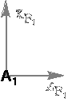
|
|
A2 1 |
Symbol or mass of the second atom, A2. Then, an integer, n1. This integer defines the distance, R2, between A2 and the n1th atom previously defined (here only the first one, n1=1). The atom, A2 is positioned along the z axis in F1.
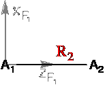
|
|
A3 n1 n2 |
Symbol or mass of the third atom, A3. Then, an integer, n1. This integer defines the distance, R3, between A3 and the n1th atom previously defined (here, you have two choices a or b with n1=1 or n1=2, respectively). Then another integer, n2, which enables ones to define the valence angle, a3 (or 3), between A3 An1 An2. 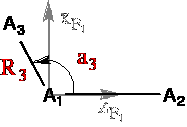 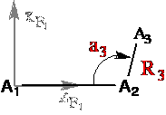 case a: A3 1 2 case b: A3 2 1
Remarks: If n1>0, n2=0, the frame Fn is defined as F1. For the case a, the coordinates are identical. However, for the case b, a3' is -a3 If n2<0, then the coordinate is cos(a3) instead of a3.
|
|
An n1 n2 n3 |
The fourth and the following atoms: Symbol or mass of the new atom, An. Then, an integer, n1. This integer defines the distance, Rn, between An and the n1th atom previously defined. Then another integer, n2, which enables ones to define the valence angle, an, between An An1 An2. Then the last integer, n3, which enables ones to define the dihedral angle, phin,(or n) between A3 An1 An2 An3. The coordinates are the spherical ones defined in the Fn frame. They are projected in F1. 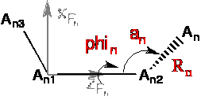 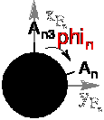
Remarks: If n2<0, then the coordinate is cos(an) instead of an. If n1>0 and n2=n3=0, the frame Fn is defined as F1. If all integers are zero (n1=n2=n3=0), the new atom is defined in Cartesian coordinates with respect to the reference position (usually the first atom).
|
This coordinate transformation is one of the first transformations. It has to be followed by another transformation: "zmat" or "poly".
Remarks:
The input set of coordinates is the 3nb_vect
(=3Nat-3) Cartesian
coordinates of vectors,
and the output set of coordinates is the 3nb_vect+3
(=3Nat) Cartesian coordinates
of the atoms,
 .
.
The parameters of the namelist "Coord_transfo" relevant to this transformation are:
name_transfo="bunch": trigger the bunch of vectors transformation.
nb_vect: number of vectors.
nb_G: number of center-of-mass of groups of atoms.
Then, the namelist is followed by "nb_vect" lines and "nb_vect" namelist "recenterG":
i) Vectors definitions :
nv iref w Anew1 Anew2 comments
-The five or six columns are:
nv: vector number.
iref: reference center
w: ratio (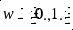)
Anew1: atomic symbol or mass (in a.u.) of the first new atom, inew1
Anew2: atomic symbol or mass (in a.u.) of the first new atom, inew2
comments: then you can add comments at the end of the line.
The Cartesian coordinates of the new atoms are:
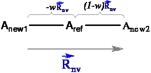
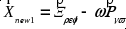 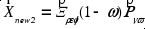
Remarks: The first center (dummy) is at the origin of the frame F1.
When w=0.5, the reference atom is in the middle of the new atoms.
When w=0.0 (w=1.0), the reference atom and the first (second) new atom, Anew1 (Anew2), are at the same place. Therefore, at least one atom HAS to be a dummy atom (without mass).
ii) Center-of-mass definitions :
The namelist "recenterG " has the following parameter:
&recenterG tab_At_TO_G(1)=4,5 tab_At_recenter(1)=4,5 Gat=2 /
tab_At_TO_G: this table of integer gives this list of atoms or centers giving a center-o-mass.
tab_At_recenter: this table of integer enables to define the list of recentered atoms. If this table is not given, we are using the previous list from tab_At_TO_G.
Gat: one integer which link the center-of-mass to a center (necessarily a dummy atom).
Remark: If several COM are used, the order are be important when common atoms (centers) are used.
iii) Examples:
The molecular system, HD-FH, is described by 3 vectors, R1, R2 and R3 as follows:
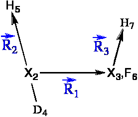
In this first example, we are not using the "recenterG" procedure, then the input data are given as follows:
|
&Coord_transfo name_transfo='bunch' nb_vect=3 / 1 1 0.5 X X (2 3: R1=X2->X3)
2 2 0.3335153425496182 D H (4 5: R2=D4->H5)
3 3 0.0 F H (6 7: R3=F6->H7)
|
-The 2 first centers are dummy atoms, X2 and X3. -Defined DH with respect to X2 (center of mass of DH) -Defined FH with respect to X3 (F and X3 are at the same position) |
In the second example, we are using one "recenterG" procedure for the group of atoms (D4, H5) to define the center-of-mass X2:
|
&Coord_transfo name_transfo='bunch' nb_vect=3 / 1 1 0.5 X X (2 3: R1=X2->X3)
2 1 0.0 D H (4 5: R2=D4->H5)
3 3 0.0 F H (6 7: R3=F6->H7)
|
-The 2 first centers are dummy atoms, X2 and X3. -Defined DH with respect to X1 (the first center). Those atoms will be recentered. -Defined FH with respect to X3 (F and X3 are at the same position) |
|
&recenterG tab_At_TO_G(1)=4,5 Gat=2 / |
The COM will be the second center (dummy atom, X2) and it is defined with the centers 4 and 5 (D4 and H5). |
This coordinate transformation can be the first one (see scheme VII.2-1). The 3Nat-6 primitive coordinates, , are defined directly in a fortran subroutine.
Remarks:
The input set of coordinates is the 3Nat-6
primitive coordinates,
and the output set of coordinates is the 3Nat
Cartesian coordinates of the atoms,
 .
.
The parameters of the namelist "Coord_transfo" relevant to this transformation are:
name_transfo="QTOX_ana": trigger the analitical transformation.
Nat: number of atoms.
Then nothing is read.
Not yet implemented in the "New transformation".
This coordinate transformation can be read just after the "poly" one. It defines the primitive set of curvilinear coordinates as polyspherical (with or without subsystems) as defined in Gatti et al. publications [].
Remarks:
The nb_vect parameter is not given since is already known from the bunch transformation.
The input set of coordinates is the 3nb_vect-3 primitive coordinates, , and the output set of coordinates is the 3nb_vect Cartesian coordinates of vectors, .
The parameters of the namelist "Coord_transfo" relevant to this transformation is:
name_transfo="poly": trigger the polyspherical transformation.
Then, the namelist is followed by "nb_vect" namelist "vector". This namelist has the following parameters:
Frame: it has to be set to .TRUE. (frame=t) for the first vector of a new frame (for F1 or a subsystem). The default is .FALSE..
nb_vect: vector number added in the new frame. You do NOT count the vector in a subsystem of this frame except the first one.
cos_th: it enables one to use valence angle (cos_th=f) or the cosine of the valence angle (cos_th=t, default).
cart: it enables define the coordinates as Cartesian ones instead of spherical.
In a new frame, Fi:
The curvilinear coordinates of the vector j in the frame Fi can be:
spherical: Rj, j, j
Cartesian: xj, yj, zj
Remarks:
When the first vector is defined in a frame, Fi, (frame=t) only the coordinate Rj is defined.
When the second vector is defined in a frame, Fi, only the coordinate Rj and j are defined.
The Cartesian Coordinates cannot be used for the first and the second vector in a frame.
When all the vectors of the frame, Fi, (included all the subsystems) have been defined, some of the Euler angles (, , ), which orient this frame with respect to another one (Fk), are added.
Remarks:
When Fi is the first frame parallel to the true BF, the Euler angles are not required, because they correspond to the overall rotation and they are not part of the internal coordinates.
When only one vector is defined in a frame Fi, only two Euler angles are required: (, ).
When Fk has only one vector (Fk is not fully defined or is similar to an E2 frame), only two Euler angles are required: (, ).
The order of the coordinates is the following: 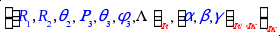
Scheme VII.2c-1: Overview of an input part with 11 vectors (on the left) and the corresponding coordinates in each frame.
This coordinate transformation cannot be the first one (see scheme VII.2-1). It makes a linear transformation from to :
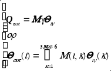
M is a (3Nat-6x3Nat-6) matrix.
After the namelist "Coord_transfo", the program reads:
- a comment line
- one integer (the number of column of the matrix)
- several blocks of "nbcol" columns of the matrix M.
Remarks:
Remarks: you cannot mix coordinates of different types (distance, angle). You can mix only distances with distances, valence angles with valence angles and dihedral angles with dihedral angles.
Subroutine: Input, : 3Nat-6 coordinates. Output, : 3Nat-6 coordinates.
Firstly, let takes the water molecule for which you want to use symmetrized coordinates:
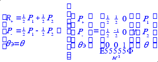
R+, R- and q' are the 3 Qin coordinates (or the ones used in the dynamics) and R1, R2 and q are the 3 Qout coordinates (or the ones of the z-matrix). Then, the matrix, M, enables one to define the unsymmetrized coordinates (R1, R2 and q) as function of symmetrized ones (R+, R- and q').
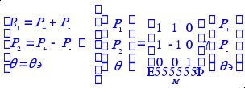
The input data of "linear" are:
&Coord_transfo name_transfo='linear' /
R+ R- a'
3
1 1. 1. 0.
2 1. -1. 0.
3 0. 0. 1.
For large dimension, the matrix can be split into "a" blocks of "nbcol" columns (the "^" stands for a blank line). However, it is easier to use nbcol=3Nat-6 (one block). The general input is the following (N=3Nat-6):
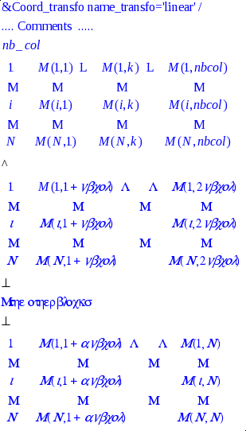
This coordinate transformation cannot be the first one (see scheme VII.2-1). It makes a linear transformation from to : like the transformation " linear ". However, the matrix M-1 is read.
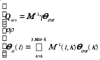
M-1 is a (3Nat-6x3Nat-6) matrix.
After the namelist "Coord_transfo", the program reads:
- a comment line
- one integer (the number of column of the matrix)
- several blocks of "nbcol" columns of the matrix M-1.
Remarks:
Remarks: you cannot mix coordinates of different types (distance, angle). You can mix only distances with distances, valence angles with valence angles and dihedral angles with dihedral angles.
Subroutine: Input, : 3Nat-6 coordinates. Output, : 3Nat-6 coordinates.
Firstly, let takes the water molecule for which you want to use symmetrized coordinates:
R+, R- and q' are the 3 Qin coordinates (or the ones used in the dynamics) and R1, R2 and q are the 3 Qout coordinates (or the ones of the z-matrix).
The input data of "linear" are:
&Coord_transfo name_transfo='linear_inv' /
R1 R2 a
3
1 .5 .5 0.
2 .5 -.5 0.
3 0. 0. 1.
This coordinate transformation cannot be the first one (see scheme VII.2-1). It makes just a copy of into :
No input is required.
Remarks:
Checking purpose only.
Subroutine: Input, : 3Nat-6 coordinates. Output, : 3Nat-6 coordinates.
This coordinate transformation cannot be the first one (see scheme VII.2-1). It enables one to used curvilinear normal modes.
Remarks:
Subroutine: Input, : 3Nat-6 coordinates. Output, : 3Nat-6 coordinates.
Not yet
This coordinate transformation cannot be the first one (see scheme VII.2-1). It performs polar or hypersherical (not yet) transformation.
Remarks:
Subroutine: Input, : 3Nat-6 coordinates. Output, : 3Nat-6 coordinates.
Not yet
This coordinate transformation cannot be the first one (see scheme VII.2-1). It makes 1D-transformations on selected coordinates.
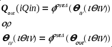
After the namelist "Coord_transfo", the program reads "nb_transfo" several namelists "oneD". This number is defined in the namelist "Coord_transfo". The default is one (nb_transfo=1).
The parameters of the namelists "oneD" are:
iQin: (default 0) index of the selected coordinate. Compulsory.
name_oneD: (default "identity") name of the transformation.
inTOout: (default, T). If this variable is set to .TRUE. (T), the transformation is:
If this variable is set to .FALSE. (F), the transformation is:
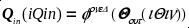
cte: table of up to 20 reals. The parameters of the selected transformation if require.
The input data are given as follows:
|
Name of the oneD transformation (name_oneD)
|
Function and cte(:) used |
|
identity
|
No parameter |
|
affine
|
Two parameters, cte(1) and cte(2), are required Remark: 104 > |cte(1)| > 10-4 |
|
cos
|
No parameter |
|
acos
|
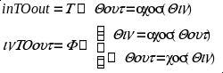 No parameter |
Remarks:
In the input namelist " oneD", with the parameter "inTOout" you can define the transformation from Qin to Qout or Qout to Qin. However, it is ALWAYS used from Qin to Qout..
Subroutine: Input, : 3Nat-6 coordinates. Output, : 3Nat-6 coordinates.
This coordinate transformation cannot be the first one (see scheme VII.2-1). It makes 1D-transformations on selected coordinates.
|
flexible |
Define the coordinates, , such there are function of active coordinates, : |
3Nat-6 integers are read:
20: flexible coord. 0: unchanged coord. 1: active coord.
A subroutine is required, |
Input, : 3Nat-6 coordinates. Output, : 3Nat-6 coordinates.
Be careful, possible conflict with flexible coordinates defined in the active transformation.
Need a subroutine: calc_dnQflex |
This coordinate transformation MUST be the last one (see scheme VII.2-1). It enables one to select the "active" coordinates (the one used during the dynamics).
|
active |
Define the active, inactive (rigid, flexible) coordinates |
3Nat-6 integers are read:
20: flexible coord. 0: rigid (frozen) coord. 1: active coord. |
Input: No input coordinates
Output, : 3Nat-6 coordinates.
Be careful, possible conflict with flexible coordinates defined in the flexible transformation. |
Reads the reference geometry. In particular, this will be set-up the coordinates with rigid constraints (rigid-0 or rigid-100).
If the curvilinear coordinates are not modified, the reference values are used when the following subroutines, calc3_f2_f1Q_num, export3_MCTDH_T, sub3_QTOdnx … are called.
Related subroutines, types...: read_para_Q(para_Q,mole,5,6), TYPE param_Q,
|
Key word / parameter |
action |
default |
|
read_nameQ |
Read the name of the coordinate when the parameter is set to T |
F |
|
unit |
Set-up the unit. The values of the coordinates are read in "Angstrom and degree" when unit=’angs’ instead of "bohr radian" |
'bohr' |
After reading the namelist, all (3N-6) the coordinate values are read in column with the coordinate names when read_nameQ=t
R1 1.
R2 1.
…
a2 1.83
Or without the coordinate names when read_nameQ=f
1.
1.
…
1.83